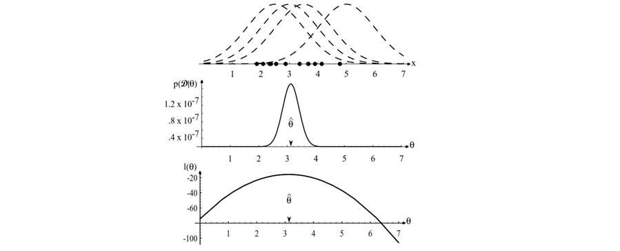

Maximum Likelihood Estimation (MLE)#
Course: Statistical Machine Learning
Reference: Duda, R. O., Hart, P. E., & Stork, D. G. (2000). Pattern Classification (2nd ed.). Wiley-Interscience.
Topic: Parametric Density Estimation
1. Introduction#
In statistical pattern classification, a common assumption is that the data is generated by an underlying probability distribution with unknown parameters. For example, we may assume the features \(x\) follow a Gaussian (Normal) distribution. To make optimal decisions (e.g., classification using Bayes decision theory), we must estimate the parameters of these distributions from a training dataset.
Maximum Likelihood Estimation (MLE) is a standard parametric method used to estimate the unknown parameters \(\theta\) of a probability density function \(p(x|\theta)\) given a dataset \(\mathcal{D}\). The principle is to select the parameter values that make the observed data most probable.
2. The Likelihood Function#
The likelihood function, denoted as \(L(\theta|\mathcal{D})\), represents the probability of observing the specific dataset \(\mathcal{D}\) as a function of the parameters \(\theta\).
Key Distinction:
It is crucial to distinguish between the probability density function \(p(x|\theta)\) and the likelihood function \(L(\theta|\mathcal{D})\):
\(p(x|\theta)\): Describes the distribution of the data \(x\) for fixed parameters \(\theta\).
\(L(\theta|\mathcal{D})\): Describes the probability of the dataset \(\mathcal{D}\) for fixed observed data, viewed as a function of \(\theta\).
The likelihood function lives in a different space than the probability density function. As noted in Duda & Hart, the functional form of the likelihood is not necessarily the same as the functional form of the density.

Figure 3.1: The top graph shows several training points in one dimension, known or assumed to be drawn from a Gaussian of a particular variance, but unknown mean. Four of the infinite number of candidate source distributions are shown in dashed lines. The middle figures shows the likelihood \(p(\mathcal{D}|\theta)\) as a function of the mean. If we had a very large number of training points, this likelihood would be very narrow. The value that maximizes the likelihood is marked \(\hat{\theta}\); it also maximizes the logarithm of the likelihood — i.e., the log-likelihood \(l(\theta)\), shown at the bottom. Note especially that the likelihood lies in a different space from \(p(x|\hat{\theta})\), and the two can have different functional forms.
3. Mathematical Derivation: Univariate Gaussian#
We begin with the simplest case: estimating the parameters of a univariate Gaussian distribution. This serves as the foundation for understanding the multivariate case used in pattern classification.
3.1 Problem Definition#
Let \(\mathcal{D} = \{x_1, x_2, \dots, x_n\}\) be a dataset consisting of \(n\) independent and identically distributed (i.i.d.) samples. We assume each sample is drawn from a univariate Gaussian distribution:
where:
\(\mu\) is the mean (location parameter).
\(\sigma^2\) is the variance (scale parameter).
3.2 The Likelihood Function#
The likelihood function \(L(\mu, \sigma^2)\) is the joint probability density of the observed data, assuming independence:
3.3 The Log-Likelihood Function#
Directly maximizing \(L(\mu, \sigma^2)\) is computationally difficult due to the product of exponentials. Since the logarithm is a strictly monotonic function, maximizing the log-likelihood \(\ell(\mu, \sigma^2)\) yields the same parameter estimates as maximizing the likelihood.
3.4 Estimating the Mean (\(\mu\))#
To find the Maximum Likelihood Estimate (MLE) \(\hat{\mu}\), we take the partial derivative of \(\ell\) with respect to \(\mu\) and set it to zero:
Solving for \(\mu\):
Result: The MLE for the mean is the sample mean.
3.5 Estimating the Variance (\(\sigma^2\))#
To find the MLE \(\hat{\sigma}^2\), we take the partial derivative of \(\ell\) with respect to \(\sigma^2\). Let \(\tau = \sigma^2\) for simpler differentiation:
Multiplying by \(2\tau^2\):
Substituting \(\hat{\mu}\) for \(\mu\) and \(\tau = \sigma^2\):
Result: The MLE for the variance is the sample variance (with denominator \(n\)).
4. Extension to Multivariate Gaussian#
In Pattern Classification, features are typically vectors \(\mathbf{x} \in \mathbb{R}^d\). The univariate derivation extends naturally to the Multivariate Gaussian Distribution.
4.1 Density Function#
4.2 MLE Estimates#
Following the same log-likelihood maximization procedure:
Mean Vector (\(\boldsymbol{\mu}\)):
\[ \hat{\boldsymbol{\mu}} = \frac{1}{n} \sum_{k=1}^n \mathbf{x}_k \]The MLE is the sample mean vector.
Covariance Matrix (\(\boldsymbol{\Sigma}\)):
\[ \hat{\boldsymbol{\Sigma}} = \frac{1}{n} \sum_{k=1}^n (\mathbf{x}_k - \hat{\boldsymbol{\mu}})(\mathbf{x}_k - \hat{\boldsymbol{\mu}})^T \]The MLE is the sample covariance matrix.
5. Properties and Limitations#
While MLE is a powerful tool, Duda & Hart highlight several important characteristics regarding these estimates, particularly in the context of classification:
Bias:
The estimate for the mean \(\hat{\mu}\) is unbiased.
The estimate for the variance \(\hat{\sigma}^2\) (and \(\hat{\boldsymbol{\Sigma}}\)) is biased. It systematically underestimates the true variance because it uses \(n\) instead of \(n-1\) in the denominator.
Unbiased estimator: \(s^2 = \frac{1}{n-1} \sum (x_k - \hat{\mu})^2\). However, for large \(n\), the difference is negligible.
Consistency:
As the number of samples \(n \to \infty\), the MLE estimates converge to the true parameter values.
Invariance:
If \(\hat{\theta}\) is the MLE of \(\theta\), then for any function \(g(\theta)\), the MLE of \(g(\theta)\) is \(g(\hat{\theta})\).
Sensitivity to Outliers:
Because MLE assumes the data follows a specific distribution (e.g., Gaussian), outliers can significantly skew the estimates of the mean and covariance, potentially degrading classification performance.
6. Connection to Bayesian Classification#
The primary role of MLE in this course is to enable Bayesian Classification when parameters are unknown.
6.1 The “Plug-In” Approach#
Train: For each class \(\omega_i\), use the training data \(\mathcal{D}_i\) to compute MLE estimates \(\hat{\boldsymbol{\mu}}_i\) and \(\hat{\boldsymbol{\Sigma}}_i\).
Construct: Form the estimated class-conditional density: \(\hat{p}(\mathbf{x} | \omega_i) = \mathcal{N}(\mathbf{x} | \hat{\boldsymbol{\mu}}_i, \hat{\boldsymbol{\Sigma}}_i)\).
Decide: Apply the Bayes Decision Rule using these estimated densities.
This is known as a Plug-In Classifier. It approximates the optimal Bayes classifier by plugging in the best estimate of the parameters.
6.2 Impact on Decision Boundaries#
The MLE estimates dictate the geometry of the classifier:
Linear Discriminant Analysis (LDA): Assumes all classes share a common covariance \(\boldsymbol{\Sigma}\). The decision boundary becomes linear (hyperplane).
Quadratic Discriminant Analysis (QDA): Assumes classes have unique covariances \(\boldsymbol{\Sigma}_i\). The decision boundary becomes quadratic (hyper-ellipsoid).
7. Bridge to Advanced Topics#
MLE is not limited to simple Gaussian classification. It is the foundational engine for many advanced models we will cover later:
Principal Component Analysis (PCA): Can be derived as a Maximum Likelihood problem for a Gaussian model with constraints (finding directions of maximum variance).
Gaussian Mixture Models (GMM): Extends single Gaussians to mixtures. MLE is used, but requires the EM Algorithm (Expectation-Maximization) for iterative solution.
Hidden Markov Models (HMM): Parameters (transition and emission probabilities) are estimated using MLE via the Forward-Backward Algorithm.
8. Summary#
The Maximum Likelihood Estimation method provides a principled approach to learning parameters for probabilistic models in machine learning.
Key Takeaways:
Likelihood vs. Probability: We maximize the likelihood of the data given the parameters, not the probability of the parameters given the data.
Log-Likelihood: Transforming to the log-domain converts products to sums, simplifying optimization.
Univariate Results:
\(\hat{\mu} = \text{mean}(\mathcal{D})\)
\(\hat{\sigma}^2 = \text{var}(\mathcal{D})\) (biased)
Relevance to Classification: These estimates are the building blocks for Linear Discriminant Analysis (LDA) and other Gaussian-based classifiers discussed later in the course.